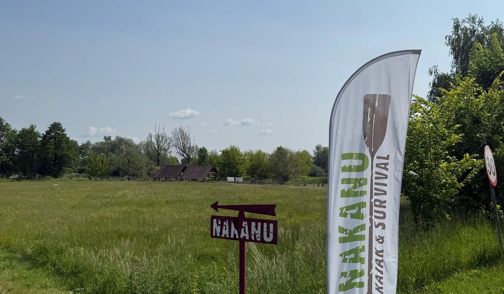
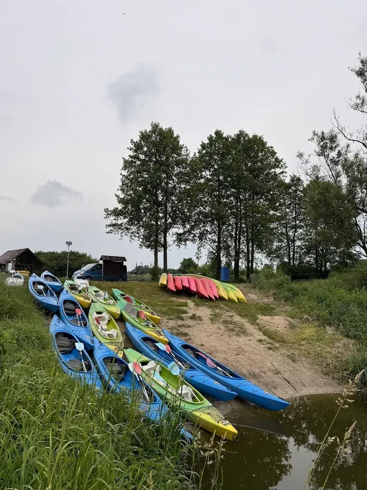
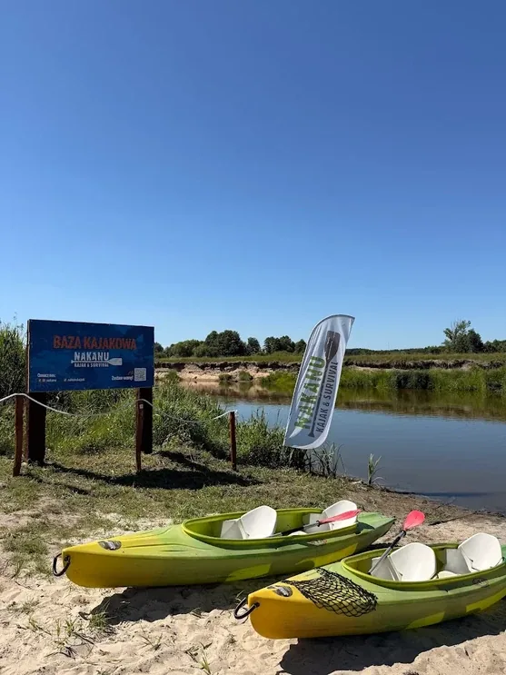
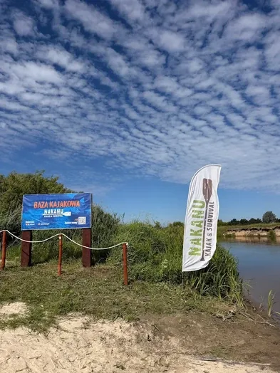
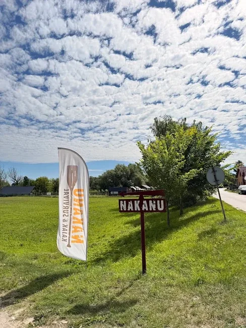
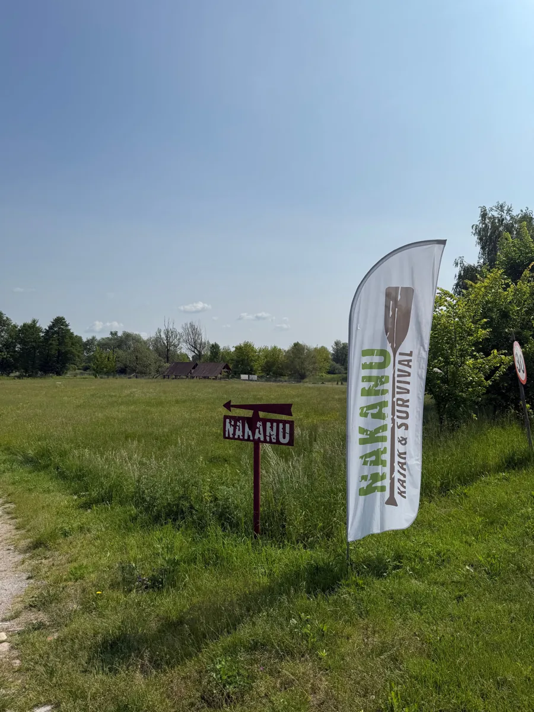
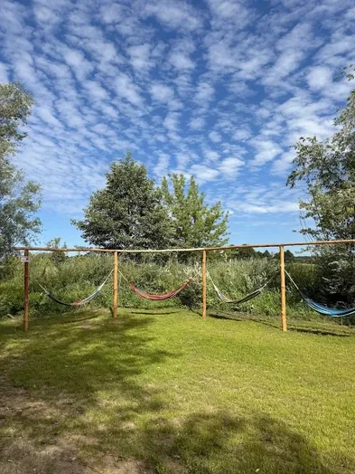

Osmolice - Strzyżowice
Dla rodzin lub na pierwszy raz.
8 kmok. 1,5 h
50 zł / os.Rezerwuję

W NAKANU nie gadamy o przygodzie, my ją robimy. Baza kajakowa w Strzyżowicach koło Żyrzyna, sześć tras od 8 do 36 km i transport w cenie. Ty wsiadasz do kajaka, resztą zajmujemy się my.
Wszystkie trasy biegną przez naszą bazę w Strzyżowicach albo z niej startują. Krótki odcinek na pierwszy raz z dziećmi, cały dzień na wodzie dla tych, co chcą więcej.
Dla rodzin lub na pierwszy raz.
Relaks z nutą przygody.
Aktywnie, ale bez spiny.
Spokojnie, ale nie nudno.
Dla tych, co chcą więcej.
Cały dzień na wodzie, aż do Wisły.
Transport na start trasy: w cenie spływu.

Organizujemy spływy kajakowe, ogniska i wydarzenia, które pozwalają oderwać się od codzienności i wrócić do natury.
Nasza baza stoi nad samym Wieprzem w Strzyżowicach. Przyjeżdżają do nas rodziny z dziećmi, grupy znajomych i firmy na integrację. Każdemu dobieramy odcinek rzeki do tego, ile ma czasu i sił.




